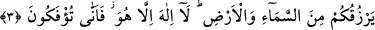

ALLAH’TAN BAŞKA
RIZIK VERECEK VAR MI?
Bismillâhirrahmânirrahîm
1. Gökleri ve yeri yaratan, melekleri ikişer, üçer, dörder kanatlı elçiler yapan
Allah’a hamdolsun. O, yaratmada dilediği arttırmayı yapar. Şüphesiz Allah, her
şeye gücü yetendir.
2. Allah’ın insanlara açacağı herhangi bir rahmeti tutup hapseden olamaz. O’nun
tuttuğunu O’ndan sonra salıverecek de yoktur. O, üstündür, hikmet sahibidir.
3. Ey insanlar! Allah’ın size olan nimetini hatırlayın; Allah’tan başka size gökten
ve yerden rızık verecek bir yaratıcı var mı? O’ndan başka tanrı yoktur. Nasıl
oluyor da (tevhidden küfre) çevriliyorsunuz!
4. Eğer seni yalanlıyorlarsa (üzülme); senden önceki peygamberler de
yalanlanmıştır. Bütün işler yalnızca Allah’a döndürülecektir.
5. Ey insanlar! Allah’ın vâdi gerçektir, sakın dünya hayatı sizi aldatmasın ve o
aldatıcı (şeytan) da Allah hakkında sizi kandırmasın!